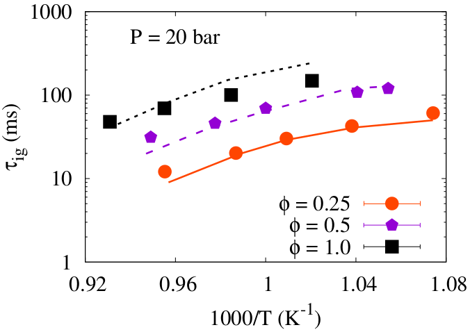
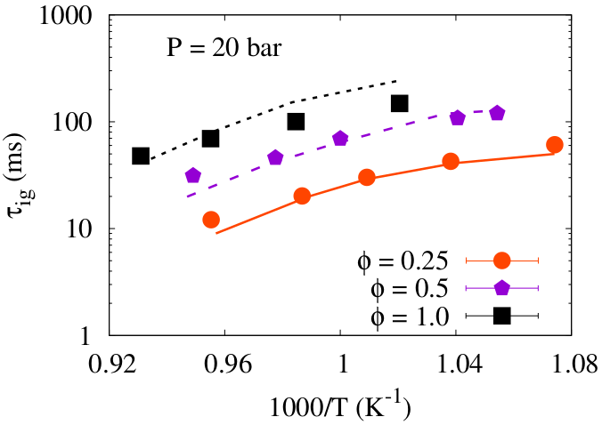
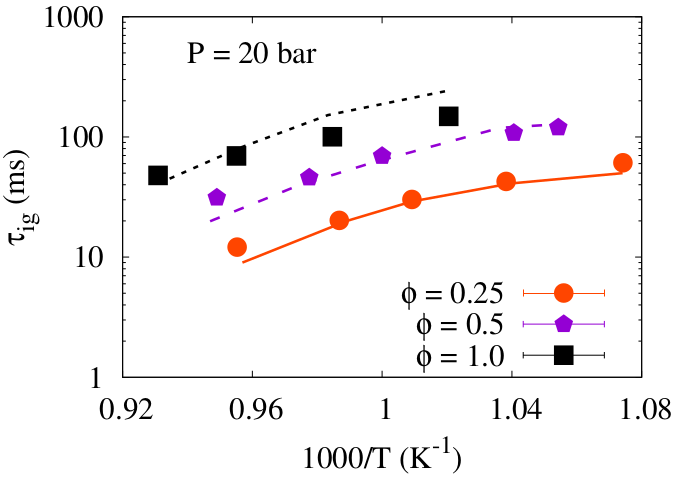

Understanding the oxidation kinetics of short methyl esters
Increased depletion rate of the petroleum resources has resulted in a quest for alternative energy forms, which are both eco-friendly and renewable. One alternative candidate is biodiesel, derived from the trans-esterification of vegetable oils and animal fat. Biodiesel typically consists of long chain methyl and ethyl esters (C14--C22 esters), which are either saturated or unsaturated. Complex chemical kinetic mechanisms of biodiesel oxidation can easily exceed 3000 species and 17000 reactions, which makes their integration into reacting flow computations formidable. This intricate nature of combustion of the actual fuel thus call for more simplistic approaches. One such approach is the development of a surrogate fuel using smaller representative fuels to mimic the actual fuel combustion. To understand the combustion behavior of the actual fuel using a surrogate formulation, the component kinetics of all representative fuels is to be well understood. Therefore, this work focus on the combustion kinetics of methyl crotonate ((E)-Methyl but-2-enoate, MC), a C5 methyl ester possessing an unsaturation on the second carbon. MC was chosen for this study as most biodiesel contains a significant portion of unsaturated methyl esters, thus making it necessary to understand their kinetics.
 

The study investigated the ignition delays of MC/O2/diluent mixtures in a rapid compression machine (RCM) at pressures of 20 and 40 bar, unburnt temperatures ranging 900 -- 1074 K, and different equivalence ratios (φ = 0.25, 0.5, and 1.0). Additionally, experimental data for the laminar flame speeds of MC were measured in a flat-flame burner at different unburned temperatures (318, 338, and 358 K). To complement the experiments, a kinetic mechanism for the oxidation of MC was developed in a comprehensive manner (high and low-temperature kinetics) and was validated for a wide range of experiments. The importance of low-temperature pathways were found to be notable in predicting the RCM experimental trends. The above figures show the simulated results for the present experimental studies (Flame speeds [1] and ignition delays [2]), obtained using the newly developed MC mechanism.